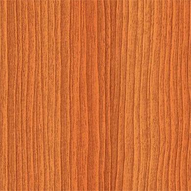
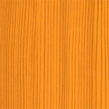
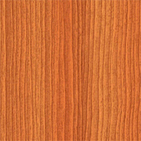
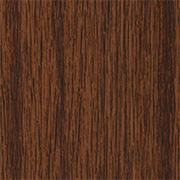
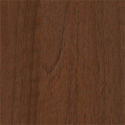
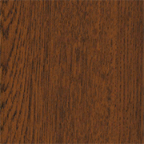
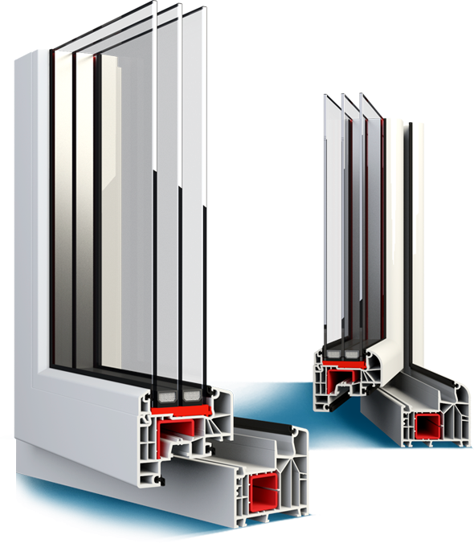
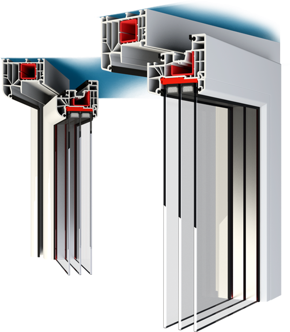
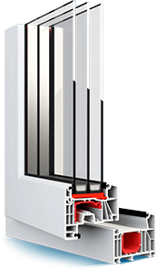
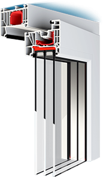

Previous

 Next
Next
Ideal 8000
Fenster jüngster Generation. Falls Sie diese Fenster wählen, dann wählen sie gleichzeitig Wärme, Ruhe und ästhetische Optik. Die im System Ideal 8000 erzeugten Fenster gewährleisten Wärmedämmung und Schallisolierung auf höchstem Niveau. Sie sind beim Bauen von Passivhäusern zu empfehlen.
- 0.76 Uw fur Ug=0.5 (wärmen Rahmen)
- 1.10 Uw fur Ug=1.0 (wärmen Rahmen)
3
Dichtungen
6
Kammern (Rahmen)
- 
item01 long line here
 item02 long line here
item02 long line here item03 long line here
item03 long line here- 
item04 long line here
- 
item05 long line here
- 
item06 long line here
-
item07 long line here
- 
item08 long line here
- 
item09 long line here
 item10 long line here
item10 long line here-
item11 long line here
 item12 long line here
item12 long line here

item01 long line here
Ideal 7000 NEW
Задача организации, в особенности же реализация намеченных плановых заданий обеспечивает широкому кругу (специалистов) участие в формировании направлений прогрессивного развития. Повседневная практика показывает, что рамки и место обучения кадров обеспечивает широкому кругу (специалистов) участие в формировании соответствующий условий активизации.
- 0.82 Uw fur Ug=0.7 (wärmen Rahmen)
- 2.10 Uw fur Ug=1.4 (wärmen Rahmen)
4
Dichtungen
7
Kammern (Rahmen)

- Beschreibung
- Farbepalette